Toolchains installation#
This guide will show how to install the SDK and toolchain for The STEAM development board. Currently there are 2 major platform environments for developing with ESP32-S3.
ESP-IDF: The official SDK for the ESP32-S3 microcontroller which is a powerful SDK, highly optimized, written primarily in C (and C++), gives direct access to low-level hardware features, and permits deep power management customization
Arduino: A simple development environments easier for beginners. it’s a wrapper-based on the Espressif’s offical toolchains, fewer customization options, heavier resource usage.
Note
Currently this documentation is under development, and current users based are beginners. Therefore, only the instruction for Arduino is written here, for the ESP-IDF installation instruction, refer to the Offical ESP-IDF documentation
If you are not familiar with the Arduino IDE, you can find installation instruction here
Arduino toolchains#
Installing using Arduino IDE#
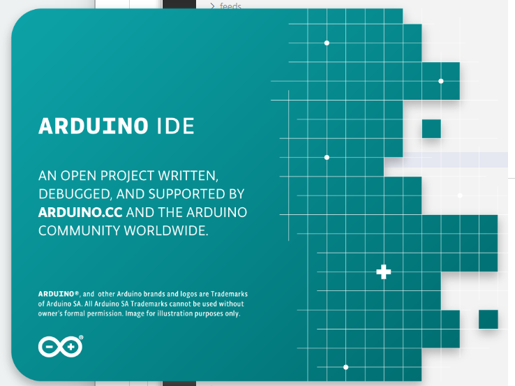
This is the way to install Arduino-ESP32 directly from the Arduino IDE.
Stable release link:
https://espressif.github.io/arduino-esp32/package_esp32_index.json
Development release link:
https://espressif.github.io/arduino-esp32/package_esp32_dev_index.json
Note
Starting with the Arduino IDE version 1.6.4, Arduino allows installation of third-party platform packages using Boards Manager. We have packages available for Windows, macOS, and Linux.
To start the installation process using the Boards Manager, follow these steps:
Install the current upstream Arduino IDE at the 1.8 level or later. The current version is at the arduino.cc website.
Start Arduino and open the Preferences window.
{kind=link}
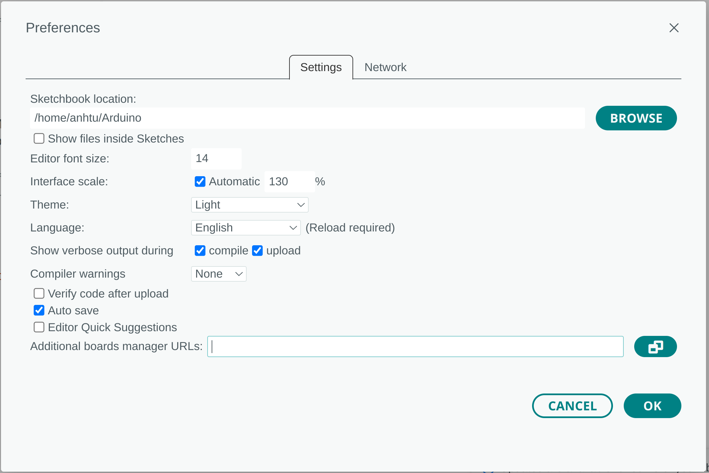
Enter one of the release links above into Additional Board Manager URLs field. You can add multiple URLs, separating them with commas.
{kind=link}
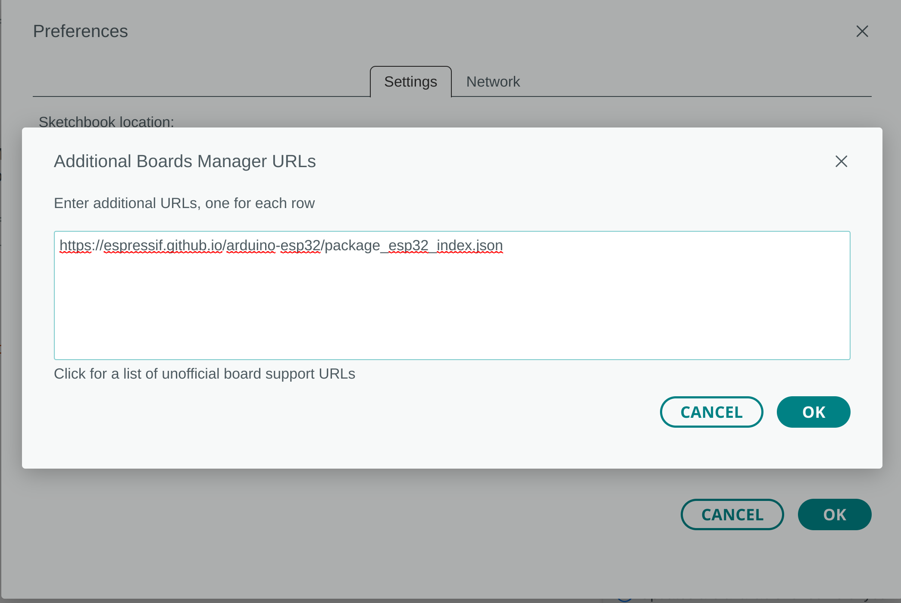
Open Boards Manager from Tools > Board menu and install esp32 platform (and do not forget to select your ESP32 board from Tools > Board menu after installation). Users in China must select the package version with the “-cn” suffix and perform updates manually. Automatic updates are not supported in this region, as they target the default package without the “-cn” suffix, resulting in download failures.
{kind=link}
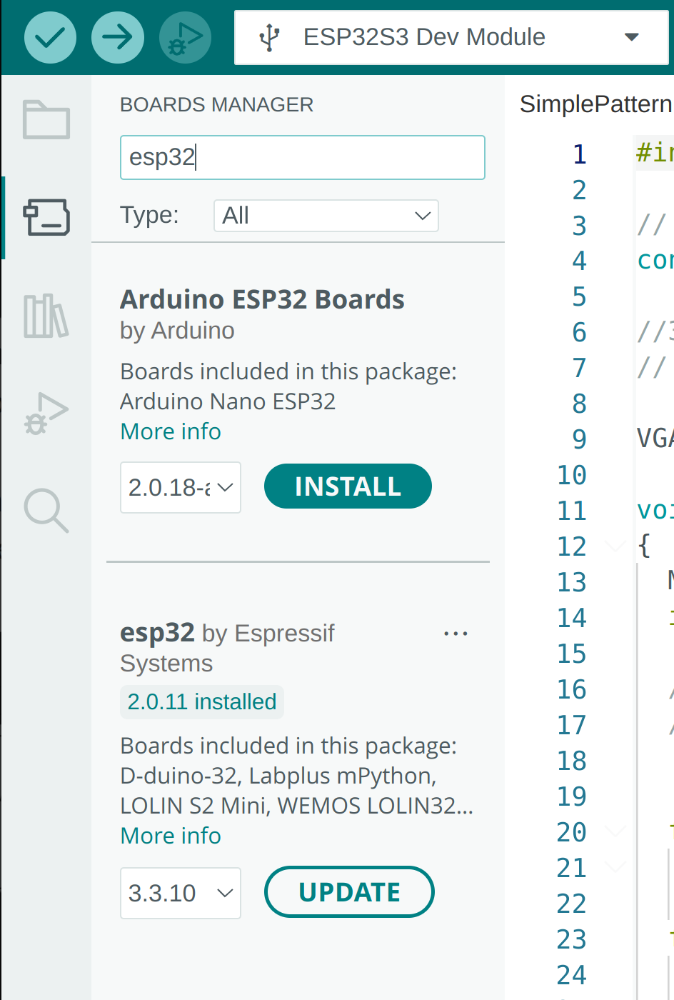
Restart Arduino IDE.
Manual installation#
Windows#
Warning
Arduino ESP32 core v2.x.x cannot be used on Windows 8.x x86 (32 bits), Windows 7 or earlier. The Windows 32 bits OS is no longer supported by this toolchain.
The Arduino ESP32 v1.0.6 still works on WIN32. You might want to install python 3.8.x because it is the latest release supported by Windows 7.
Steps to install Arduino ESP32 support on Windows:
Step 1
Download and install the latest Arduino IDE
Windows Installerfrom [arduino.cc](https://www.arduino.cc/en/Main/Software)Download and install Git from [git-scm.com](https://git-scm.com/download/win)
Start
Git GUIand do the following steps:
Select
Clone Existing Repository
{kind=link}
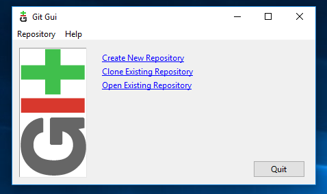
- Select source and destination
Sketchbook Directory: Usually
C:/Users/[YOUR_USER_NAME]/Documents/Arduinoand is listed underneath the “Sketchbook location” in Arduino preferences.Source Location:
https://github.com/espressif/arduino-esp32.gitTarget Directory:
[ARDUINO_SKETCHBOOK_DIR]/hardware/espressif/esp32Click
Cloneto start cloning the repository
Step 2
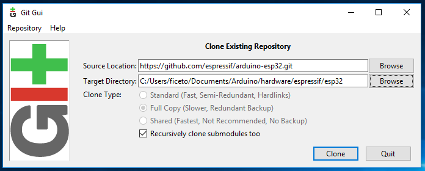
Step 3
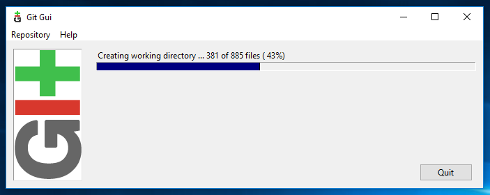
open a Git Bash session pointing to
[ARDUINO_SKETCHBOOK_DIR]/hardware/espressif/esp32and execute`git submodule update --init --recursive`Open
[ARDUINO_SKETCHBOOK_DIR]/hardware/espressif/esp32/toolsand double-clickget.exe
Step 4
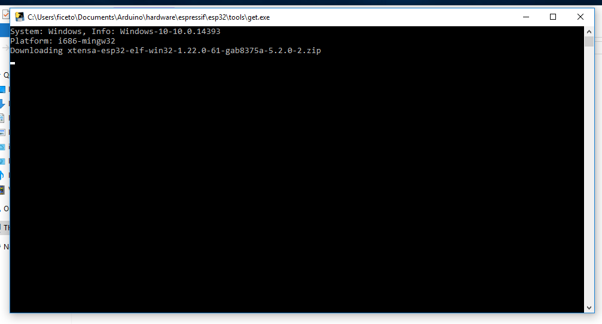
When
`get.exe`finishes, you should see the following files in the directory
Step 5
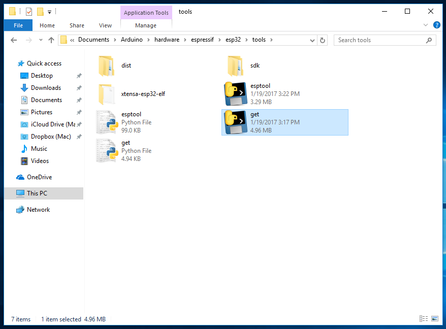
Plug your ESP32 board and wait for the drivers to install (or install manually any that might be required)
Start Arduino IDE
Select your board in
Tools > BoardmenuSelect the COM port that the board is attached to
Compile and upload (You might need to hold the boot button while uploading)
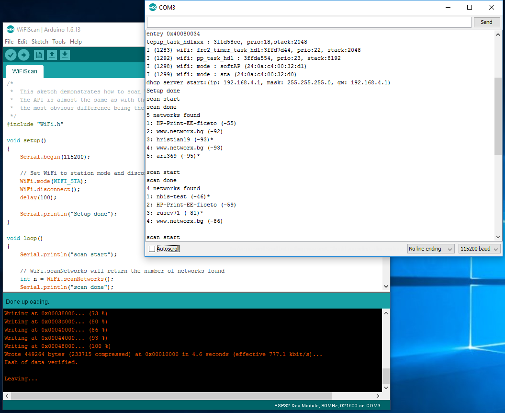
How to update to the latest code#
Start
Git GUIand you should see the repository underOpen Recent Repository. Click on it!
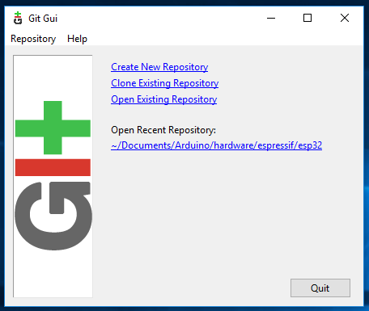
From menu
RemoteselectFetch from>origin
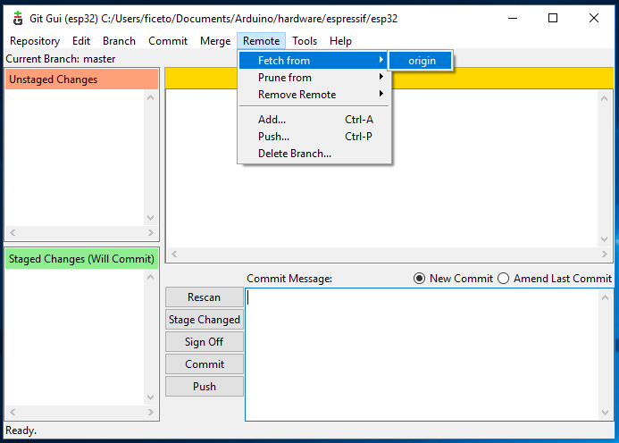
Wait for git to pull any changes and close
Git GUIOpen
[ARDUINO_SKETCHBOOK_DIR]/hardware/espressif/esp32/toolsand double-clickget.exe
Linux#
{kind=link}
Debian/Ubuntu#
Install latest Arduino IDE from arduino.cc.
Open Terminal and execute the following command (copy -> paste and hit enter):
sudo usermod -a -G dialout $USER && \
sudo apt-get install git && \
wget https://bootstrap.pypa.io/get-pip.py && \
sudo python3 get-pip.py && \
sudo pip3 install pyserial && \
mkdir -p ~/Arduino/hardware/espressif && \
cd ~/Arduino/hardware/espressif && \
git clone https://github.com/espressif/arduino-esp32.git esp32 && \
cd esp32/tools && \
python3 get.py
Restart Arduino IDE.
If you have Arduino installed to ~/, modify the installation as follows, beginning at mkdir -p ~/Arduino/hardware:
cd ~/Arduino/hardware
mkdir -p espressif && \
cd espressif && \
git clone https://github.com/espressif/arduino-esp32.git esp32 && \
cd esp32/tools && \
python3 get.py
Fedora#
Install the latest Arduino IDE from arduino.cc.
Note
Command $ sudo dnf -y install arduino will most likely install an older release.
Open Terminal and execute the following command (copy -> paste and hit enter):
sudo usermod -a -G dialout $USER && \
sudo dnf install git python3-pip python3-pyserial && \
mkdir -p ~/Arduino/hardware/espressif && \
cd ~/Arduino/hardware/espressif && \
git clone https://github.com/espressif/arduino-esp32.git esp32 && \
cd esp32/tools && \
python get.py
Restart Arduino IDE.
openSUSE#
Install the latest Arduino IDE from arduino.cc.
Open Terminal and execute the following command (copy -> paste and hit enter):
sudo usermod -a -G dialout $USER && \
if [ `python --version 2>&1 | grep '2.7' | wc -l` = "1" ]; then \
sudo zypper install git python-pip python-pyserial; \
else \
sudo zypper install git python3-pip python3-pyserial; \
fi && \
mkdir -p ~/Arduino/hardware/espressif && \
cd ~/Arduino/hardware/espressif && \
git clone https://github.com/espressif/arduino-esp32.git esp32 && \
cd esp32/tools && \
python get.py
Restart Arduino IDE.
macOS#
Install the latest Arduino IDE from arduino.cc.
Open Terminal and execute the following command (copy -> paste and hit enter):
mkdir -p ~/Documents/Arduino/hardware/espressif && \
cd ~/Documents/Arduino/hardware/espressif && \
git clone https://github.com/espressif/arduino-esp32.git esp32 && \
cd esp32/tools && \
python get.py
Where ~/Documents/Arduino represents your sketch book location as per “Arduino” > “Preferences” > “Sketchbook location” (in the IDE once started). Adjust the command above accordingly.
If you get the error below, install through the command line dev tools with xcode-select –install and try the command above again:
xcrun: error: invalid active developer path (/Library/Developer/CommandLineTools), missing xcrun at: /Library/Developer/CommandLineTools/usr/bin/xcrun
Run the command:
xcode-select --install
Try
python3instead ofpythonif you get the error:IOError: [Errno socket error] [SSL: TLSV1_ALERT_PROTOCOL_VERSION] tlsv1 alert protocol version (_ssl.c:590)when runningpython get.pyIf you get the following error when running
python get.py:urllib.error.URLError: <urlopen error SSL: CERTIFICATE_VERIFY_FAILED, go toMacintosh HD > Applications > Python3.6 folder (or any other python version), and run the following scripts: Install Certificates.command and Update Shell Profile.commandRestart Arduino IDE.